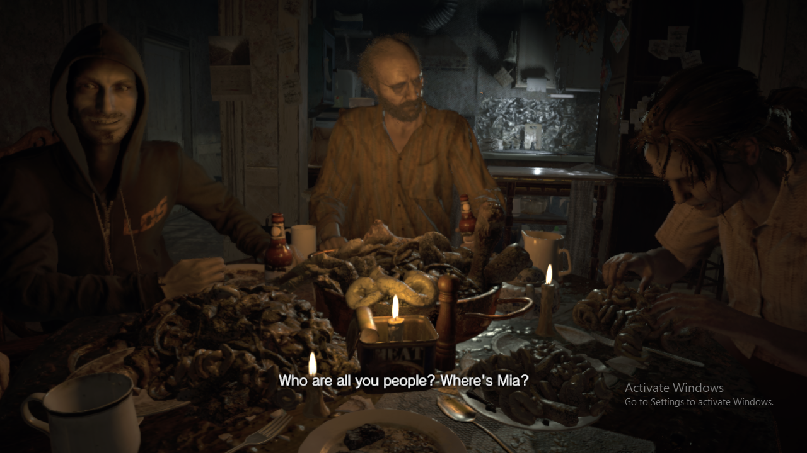
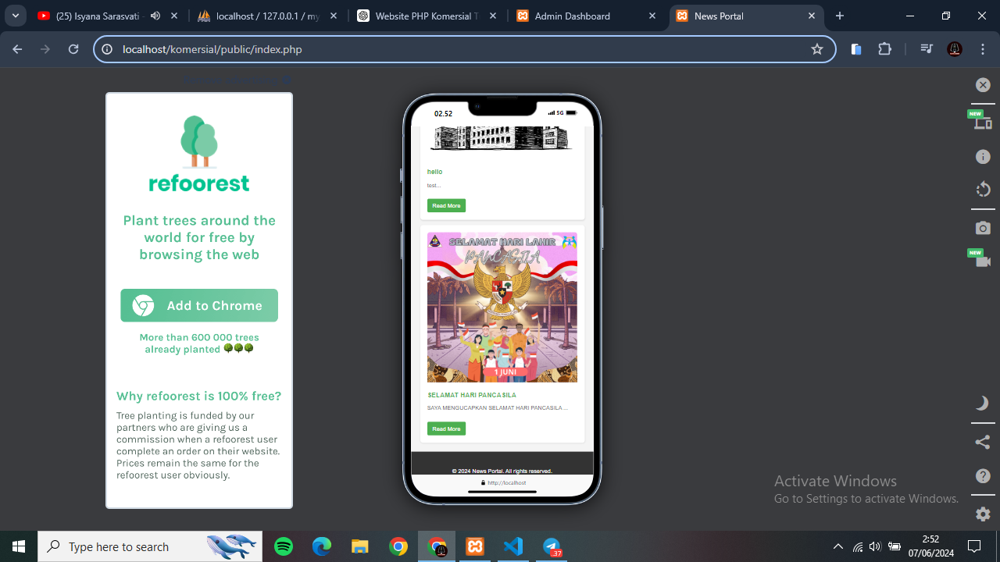
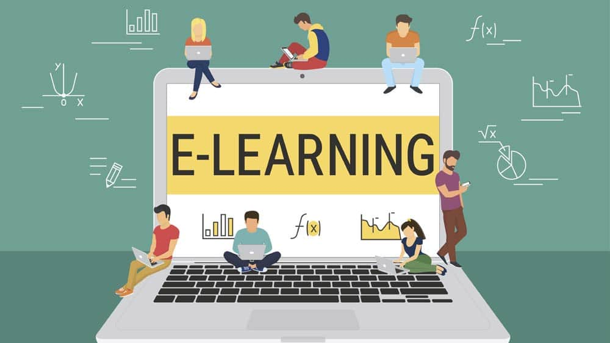
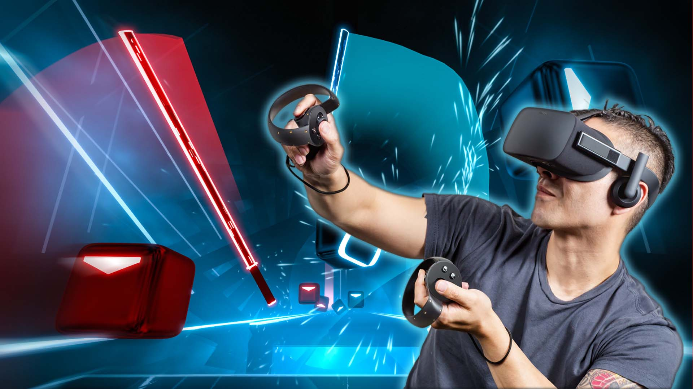
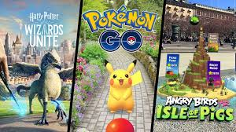
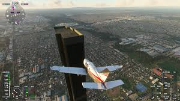
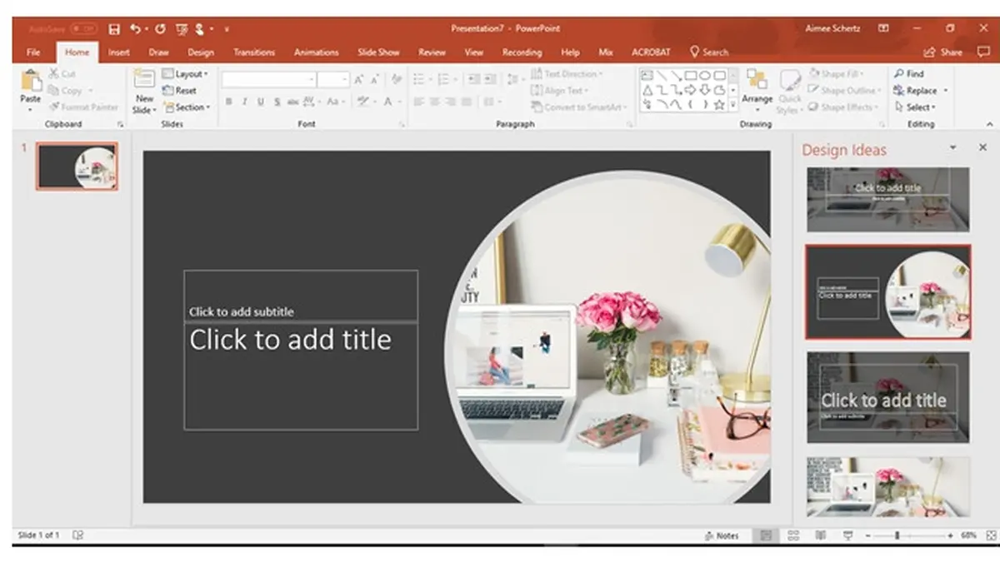
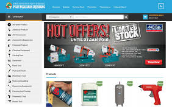

Website Interaktif
Website yang dirancang dengan elemen-elemen interaktif seperti tombol, formulir, dan animasi. Pengguna dapat berinteraksi dengan konten, mengirimkan informasi, atau menerima umpan balik secara real-time.

Website interaktif biasanya dirancang untuk meningkatkan keterlibatan pengguna dan memberikan pengalaman yang lebih dinamis.
Game Video
Game yang memungkinkan pemain untuk berpartisipasi aktif dalam cerita atau aktivitas melalui kontroler, keyboard, atau perangkat lainnya. Contohnya adalah game konsol, PC, dan game mobile.
Game video menawarkan berbagai genre dan pengalaman, mulai dari petualangan hingga simulasi.
Aplikasi Mobile
Aplikasi yang diinstal pada perangkat mobile (smartphone atau tablet) yang menawarkan berbagai fungsi, mulai dari permainan, edukasi, hingga utilitas sehari-hari. Aplikasi ini sering memanfaatkan fitur perangkat seperti layar sentuh dan sensor gerak.
Aplikasi mobile telah menjadi bagian penting dari kehidupan sehari-hari, memudahkan berbagai aktivitas pengguna.
E-Learning
Platform pembelajaran online yang menyediakan materi pelajaran interaktif, seperti kuis, video, dan simulasi. Pengguna dapat belajar secara mandiri dengan umpan balik langsung dari sistem.
E-Learning memudahkan proses pembelajaran jarak jauh dengan menggunakan teknologi digital.
Virtual Reality (VR)
Teknologi yang menciptakan lingkungan simulasi tiga dimensi yang dapat dieksplorasi dan berinteraksi oleh pengguna menggunakan headset VR. Contohnya adalah aplikasi VR untuk pelatihan, game, dan simulasi medis.
Virtual Reality memberikan pengalaman imersif dengan lingkungan yang sepenuhnya terkomputerisasi.
Augmented Reality (AR)
Teknologi yang menggabungkan objek virtual dengan dunia nyata melalui perangkat seperti smartphone atau kacamata AR. Contohnya adalah aplikasi AR yang menambahkan informasi atau objek digital ke lingkungan sekitar pengguna.
Augmented Reality menambahkan lapisan digital pada dunia nyata untuk meningkatkan interaksi pengguna.
Simulasi Interaktif
Program yang mensimulasikan situasi dunia nyata untuk tujuan pelatihan atau hiburan. Contohnya adalah simulator penerbangan atau simulasi medis.
Simulasi interaktif memungkinkan pengguna untuk berlatih dan belajar dalam lingkungan yang aman dan terkendali.
Multimedia Presentasi
Presentasi yang menggabungkan teks, gambar, video, dan audio dengan elemen interaktif seperti hyperlink atau polling. Contohnya adalah presentasi PowerPoint dengan elemen interaktif atau software presentasi lainnya seperti Prezi.
Multimedia presentasi membuat informasi lebih menarik dan mudah dipahami melalui berbagai media.
Chatbot dan Asisten Virtual
Program AI yang dapat berinteraksi dengan pengguna melalui percakapan teks atau suara. Contohnya adalah asisten virtual seperti Siri, Google Assistant, dan chatbot customer service di website.

Chatbot dan asisten virtual memudahkan pengguna untuk mendapatkan informasi dan bantuan melalui interaksi otomatis.
Kios Interaktif
Perangkat yang biasanya ditempatkan di tempat umum yang memungkinkan pengguna untuk mengakses informasi atau layanan melalui layar sentuh. Contohnya adalah kios informasi di museum atau mesin tiket di stasiun kereta.
Kios interaktif memberikan cara yang mudah bagi pengguna untuk mengakses informasi dan layanan di tempat umum.